Hoveniers G & S, gevestigd te Leuven. Wij ontwerpen, aanleggen en onderhouden tuinen met een focus op duurzaamheid, natuurlijke materialen en tijdloos design. Al meer dan 20 jaar in het Hageland.
Transformatie
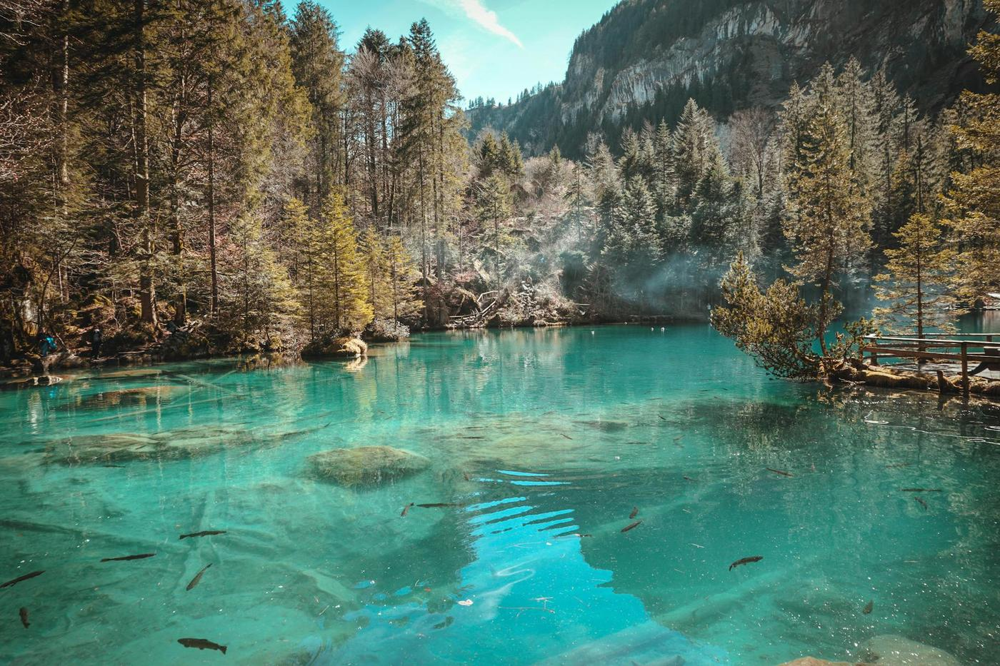
Tweede fase opwaardering in Veltem-Beisem · scroll om te vergelijken
Onze diensten
Van eerste schets tot jarenlang onderhoud. We combineren vakmanschap met ecologisch inzicht. Elke tuin vertelt een verhaal — wij helpen uw verhaal te schrijven.
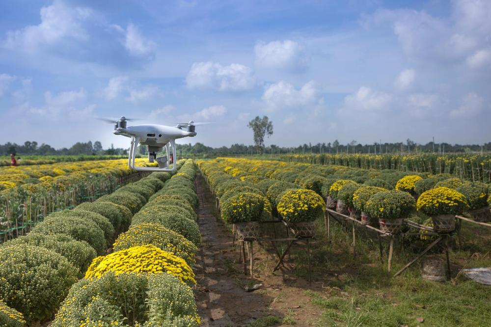
Terrassen in natuursteen of keramiek, houten schermen, waterpartijen, verlichting en beplanting. Alles wordt afgestemd op het specifieke karakter van uw grondstuk.
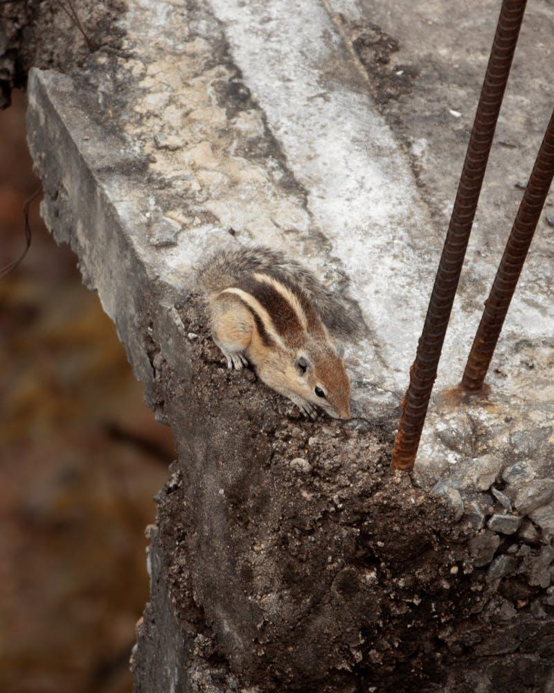
Seizoensgebonden snoei, bemesting, onkruidbeheersing en gazonverzorging. Vaste afspraken, flexibele planning. Zo blijft uw tuin het hele jaar door in topconditie.
Bestaande tuinen een tweede leven geven. We optimaliseren de indeling, vervangen verouderde beplanting en brengen de tuin terug naar de hedendaagse standaarden.
Onze werkwijze
We luisteren naar uw wensen, analyseren het terrein en bespreken budget en tijdlijn.
Een visueel ontwerp met plantenplan en een gedetailleerde prijsopgave zonder kleine lettertjes.
Een visueel ontwerp met plantenplan en een gedetailleerde prijsopgave zonder kleine lettertjes.
Vakkundige hoveniers voeren het werk uit met oog voor detail en respect voor uw omgeving.
We lopen samen de tuin door en geven 2 jaar garantie op alle aangelegde werkzaamheden.
We lopen samen de tuin door en geven 2 jaar garantie op alle aangelegde werkzaamheden.
Gerealiseerd
Elk project begint met een gesprek. Deze tuinen zijn het resultaat van nauwe samenwerking met de eigenaar.
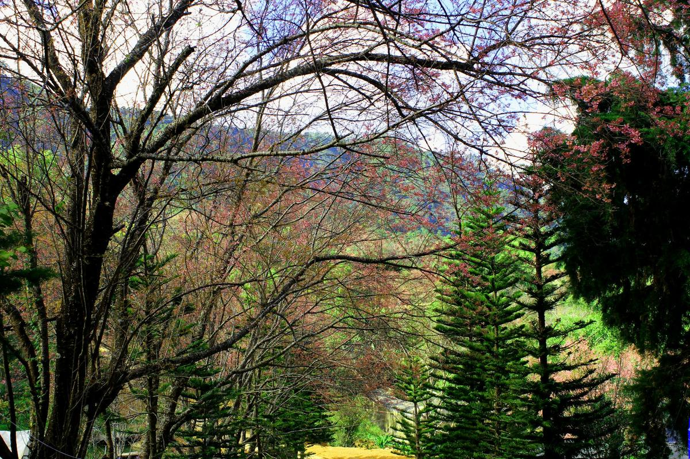
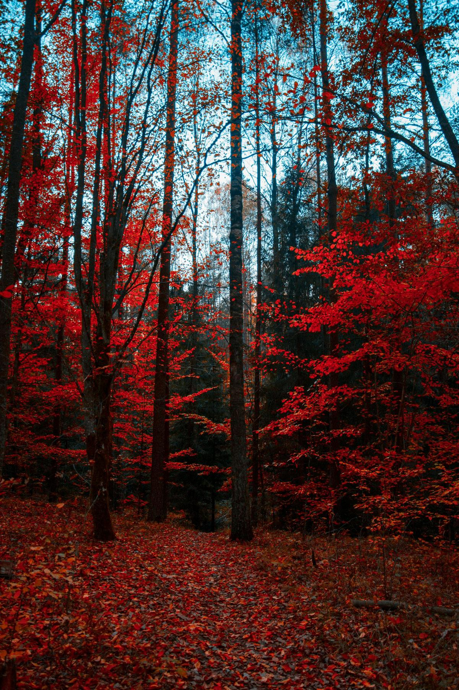
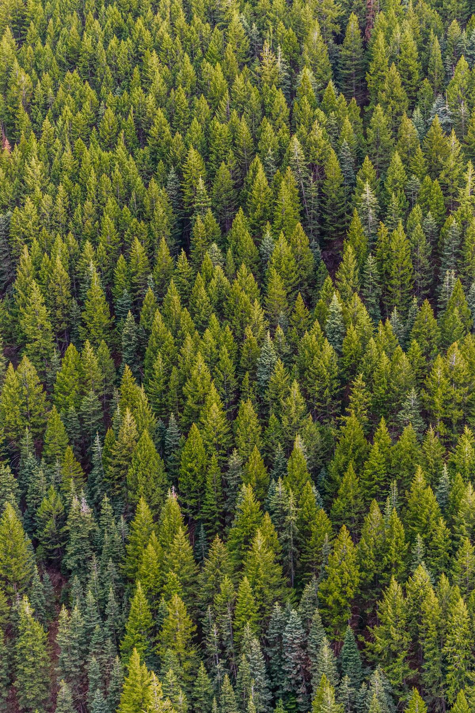
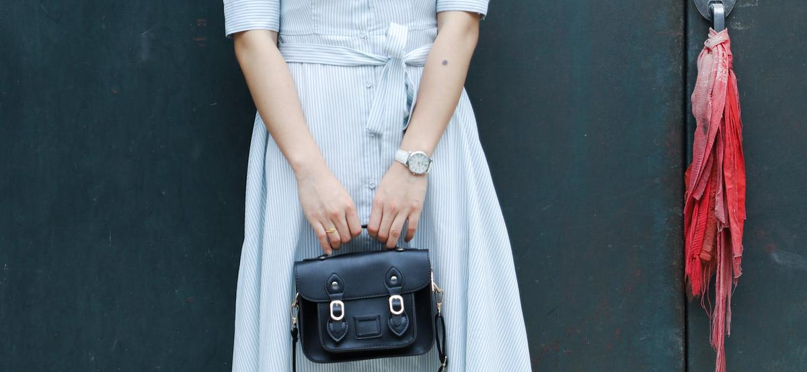
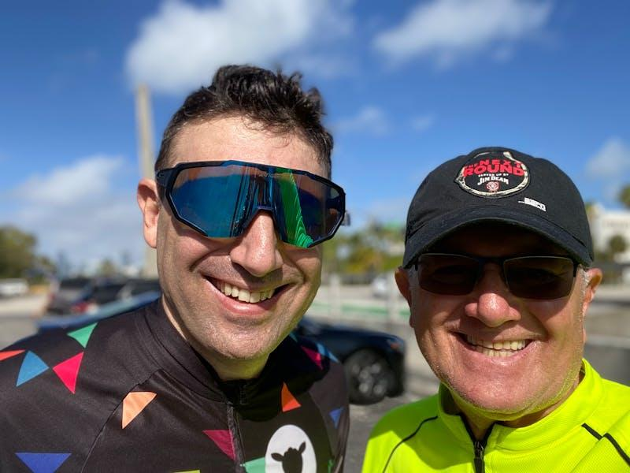
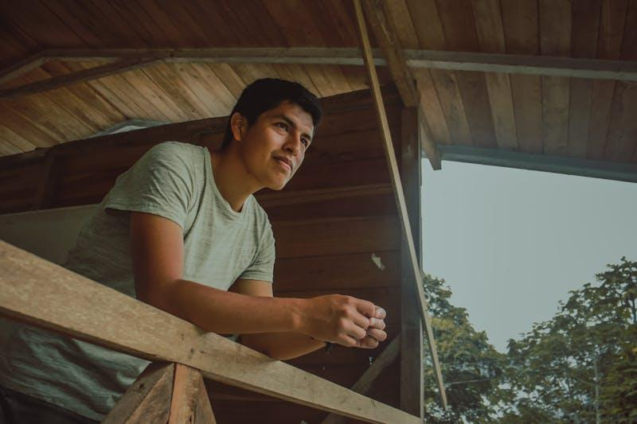
De samenwerking was prettig, het resultaat fenomenaal. We genieten elke dag van onze Scandinavische tuin in Veltem-Beisem.
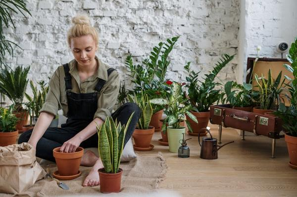
Lucas Devos
Veltem-Beisem
Over ons
Al meer dan 20 jaar is Toptuinen G & S het adres in Leuven en omstreken voor wie kwaliteit, service en een persoonlijke aanpak vooropstelt.
Onze 5-koppige ploeg bestaat uit vakidioten — hoveniers die hun vak als ambacht zien. Geen externe onderaannemers, geen studentenploegen. Elk project wordt van begin tot eind door onszelf uitgevoerd.
20+
Jaar ervaring
350+
Realisaties
4.8
Google score
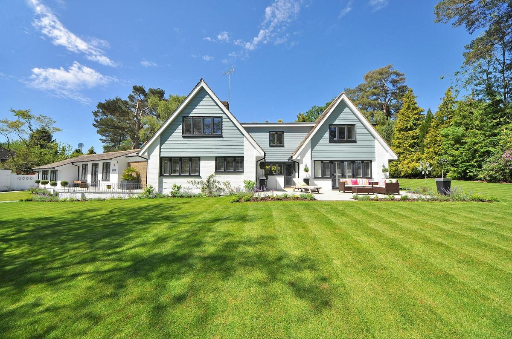
Start uw project
Vraag een vrijblijvende offerte aan. We komen graag bij u langs in Leuven, Bertem, Veltem of Kessel-Lo.